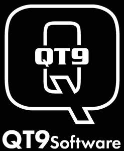

Trade Mark Journal No.2025/051 19 December 2025
UK00004273173 3 October 2025 (9,35,41,42)

- Class 9
- Computer software platforms relating to quality management systems; on-premise management software; data processing equipment and computers; software; computer software packages; downloadable software; testware; recorded computer software; business technology software; Scientific, research, navigation, surveying, photographic, cinematographic, audio visual, optical, weighing, measuring, signalling, detecting, testing, inspecting, life-saving and teaching apparatus and instruments; apparatus and instruments for recording, transmitting, reproducing or processing sound, images or data; recorded and downloadable media, computer software, blank digital or analogue recording and storage media; mechanisms for coin-operated apparatus; cash registers, calculating devices; computers and computer peripheral devices; all the foregoing for use in or relating to the analysis, improvement or automation of business processes; computer programs for data processing; computer software to enable searching and processing of data; data capture and collection apparatus; data processing apparatus, equipment and systems; data storage apparatus; computer software platforms; Computer hardware and software for use in the fields of customer service and engagement, customer and employee support, employee and operations management, and compliance and security management incorporating workforce engagement software, namely, software for workforce forecasting and scheduling, knowledge and employee assistance, quality assurance, operational insights and analytics, and operational and performance management; software for self-service, namely, intelligent virtual assistants, web and mobile self-service, and social communities; software for experience management, namely, software for capturing and correlating voice, video, email, text, chat, social digital, and survey interactions with customers for the purpose of improving customer service and experience; software for enterprise recording to enhance regulatory compliance and /or minimize fraud, namely, omnichannel recording of voice, text, screen, and / or video, compliance recording, voice biometrics and authentication, and real-time analysis of caller behaviour and related call parameters to detect potential fraud; enterprise resource planning [ERP] software; computer-aided manufacturing software; computer-aided manufacturing [CAM] software; business intelligence software.
- Class 35
- Advertising; business management; business administration; office function; all the foregoing for use in or relating to the analysis, improvement or automation of business processes; business consultancy and advisory services relating to data processing; analysis of market data and statistics; business data analysis services; collection of data; compilation of business data; compilation and systemisation of information into computer databases; computerised data verification; computerised point-of-sale data collection services for retailers; data management services; data processing services; data processing verification; information and data compiling and analysing relating to business management; preparation and provision of business data; preparation and writing of business, marketing and commercial reports; business consultancy services relating to the supply of quality management systems; analysis of business management systems; business intelligence services.
- Class 41
- Education; providing of training; arranging and conducting of conferences, congresses and symposiums.
- Class 42
- Scientific and technological services and research and design relating thereto; industrial analysis, industrial research and industrial design services; quality control and authentication services; design and development of computer hardware and software; all the foregoing for use in or relating to the analysis, improvement or automation of business processes; computerised analysis of data; creation of computer programs for data processing; data mining; data security services; data warehousing; design and development of electronic data security systems; design and development of computer databases; design of software; design of information systems relating to management; professional consultancy in relation to data processing; technical data analysis services; preparation and provision of reports relating to computer programs; computer security system monitoring services; computerised data storage services; software as a service [SAAS]; Software as a service (SAAS) services featuring software for complying with international standards for quality system requirements; Computer software design; Software creation; Software engineering; Software development; Installation of software; Software engineering services for data processing programs; Computer programming and software design; Software design and development; Updating of computer software; Computer software technical support services; Computer aided testing services; IT consulting services in the fields of business enterprise solutions, computer software, hardware, and cloud deployment, self-service and automation, telecommunications, digital security and surveillance, computer and telecommunication networks and multimedia.
Brant Engelhart
Representative: Tomkins & Co